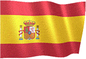
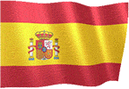

دليل اللعبة v3.0
حدد لغة دليل اللعبة.

 



لعبة عامة
● الهدف من اللعبة هو غزو العالم بأسره من خلال القيام بعمليات برية أو باستخدام الوكالة السرية.
● يمكنك استخدام الخيارات المتعلقة بالاقتصاد والأمن وإدارة الدولة على شاشة اللعبة.
● للتبديل إلى اليوم التالي ، يجب عليك استخدام السهم الموجود أسفل يمين شاشة اللعبة.
● يتم إضافة الدخل اليومي والسكان اليومي إلى جميع الولايات في انتقالات اليوم.
● عند انتهاء اليوم ، قد تقدم دول أخرى عروضًا لبلدك أو قد تحدث أحداث عالمية عشوائية.
● يمكن أن تؤثر القرارات التي تتخذها بشأن العروض والمواقف على الاقتصاد والسكان والعلاقات مع الحكومات الأخرى.
اقتصاد
● يمكنك كسب المال من خلال الاستثمار في بلدك.
● يمكنك كسب المال عن طريق اختيار معدل الضريبة.
● يمكنك كسب المال عن طريق معالجة الموارد المعدنية الموجودة.
● يمكنك القيام باستثمارات عن طريق إرسال رجال الأعمال إلى بلدان أخرى.
● تكسب دخلاً يوميًا من المؤسسات العامة.
● تكسبك أبحاث المصانع والصناعة دخلاً إضافيًا.
● تكسب أموالاً إضافية من كل سائح يأتي إلى بلدك.
● يمكنك دعم اقتصادك عن طريق سحب القروض.
● إذا غزت البلدان ، فستربح جائزة كبرى لمرة واحدة.
● تتم إضافة 100٪ من الدخل اليومي للدول التي تشغلها.
● (يمكنك التحقق من ذلك من الإحصائيات - قسم عائدات الفتح.)
● يمكنك كسب المال عن طريق إجراء عمليات من قسم الأمن الداخلي.
● يمكنك كسب المال عن طريق القيام بهجمات إلكترونية على دول أخرى.
● يمكنك كسب المال عن طريق إعلان التعبئة الوطنية.
● يمكنك كسب المال باستخدام الخدمة السرية الخاصة بك.
مركز العمليات
● يمكنك غزو البلدان بعمليات برية.
● إذا نجحت في الحملة الأرضية ، فستكسب نقاط الالتقاط.
● إذا وصلت نقطة الغزو إلى 100٪ ، فسيتم احتلال البلاد.
● يمكنك إضعاف جيش بلد العدو بضربات جوية.
● يمكنك القيام بهجمات إلكترونية على دول أخرى.
● يمكنك استخدام الخيارات الإضافية من خلال تفعيل مبنى القنصلية.
● يمكنك الحصول على تقارير عسكرية واقتصادية ومفصلة عن طريق وضع الجواسيس في البلدان.
● يمكنك عقد اتفاقيات صداقة مع الدول التي تكون في حالة حرب معها.
● يمكنك القيام بجميع الهجمات بأذونات.
● يمكنك تطبيق الحظر على البلدان.
الإنتاج المحلي
● يمكنك إنتاج المنتج الذي تريده من قسم الإنتاج.
● يجب عليك إرسال طلبات تجارية للدول لبيع منتجاتك.
● يمكنك التفاوض على أسعار المنتجات التي ترغب دول أخرى في شرائها.
● فقط الدول الصديقة تريد شراء منتجات منك.
● كلما زاد تنوع المنتجات لديك ، زادت احتمالية تداولك.
● من خلال تحسين علاقاتك التجارية مع الدول الأخرى ، يمكنك زيادة أسعار عروضك.
الأمن الشخصي
● يمكن للبلدان التي تخوضها حربًا أن تقتلك.
● يجب عليك النظر في تقرير المستشار.
● لحماية نفسك من الاغتيالات ، يجب عليك تعيين مستشار وقائي للغاية.
● تحتاج أيضًا إلى ترقية حزم الدعم.
منظمة سرية
● يمكنك بدء أعمال الشغب في بلدان أخرى من خلال إنشاء جهاز الخدمة السرية.
● يمكنك الاغتيال مع الخدمة السرية.
● يمكنك فقط استخدام الأفراد المدربين في العمليات.
● سيزيد طاقمك وأسلحتك المدربة من قوتك التشغيلية.
الجمعية والانتخابات
● تُجرى الانتخابات كل 365 يومًا.
● للفوز بالانتخابات ، يجب أن تحصل على أكبر عدد من الأصوات.
● إذا نجحت في الاختيارات ، فستكسب أموالاً إضافية.
● سن القوانين والتجمعات وتوزيع الأموال وإجراء المقابلات لكسب الأصوات.
● إذا خسرت الانتخابات ، فعليك القيام بتدخل عسكري في غضون 8 أيام.
● إذا فشل التدخل العسكري ، تنتهي اللعبة.
(PREMIUM) التحالفات العالمية
● يمكنك تشكيل تحالفك الخاص أو الدخول في تحالفات قائمة.
● يمكنك عقد اجتماعات مع الدول المتحالفة.
● يمكنك كسب المال من خلال استكمال طلبات الدول الحليفة.
● ينشط بحث التحالف خيارات إضافية.
● يمكنك تقوية دفاعك باستخدام منتجات التحالف.
● يمكنك إجراء عمليات مشتركة مع الدول الحليفة.
● إذا هاجمت دولًا أعضاء في نفس التحالف ، يمكن طردك من التحالف.
(PREMIUM) الأمم المتحدة
● يمكنك التصويت على 5 قرارات مختلفة باستخدام الأمم المتحدة.
● يمكن اتخاذ قرارات الدعم المالي أو العقوبات الاقتصادية لدول أخرى.
● لا يمكن اتخاذ قرارات جديدة حتى تنتهي القرارات النشطة.
● فقط الدول غير المحتلة تصوت في القرارات.
(بريميوم) صناعة ثقيلة
● يمكن إنتاج 5 أسلحة ومعدات مخصصة مختلفة بالصناعات الثقيلة.
● يمكن فقط للدول الصديقة التي لديها طلبات تجارية أن ترسل لك طلب تجارة.
● لا يمكن استخدام الأسلحة المنتجة في المعارك.
الفوز والخسارة
● إذا انتصرت على جميع البلدان بنسبة 100٪ ، فستربح اللعبة.
● إذا كانت أموالك أقل من 20.000.000 ، فستنتهي اللعبة.
● إذا كانت السعادة أقل من 0 ، تنتهي اللعبة.
حول
● يمكنك مشاركة المحتوى الذي تريد إضافته واقتراحاتك معنا.
● يمكنك الوصول إلينا عن طريق البريد من الصفحة الموجودة في اللعبة.
● سنكون سعداء إذا سجلت لعبتنا.
● العاب جيدة.